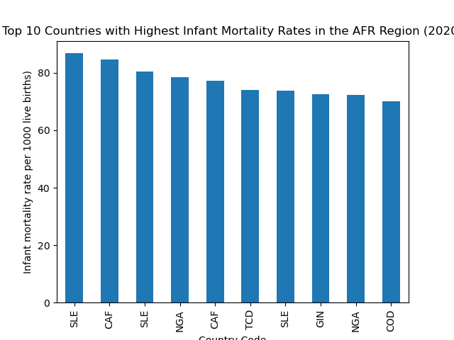

The data used to create this bar chart was retrieved from the World Health Organization's (WHO) API. The API endpoint used was 'https://ghoapi.azureedge.net/api/MDG_0000000001', which provides data for the indicator 'Infant Mortality'.
A GET request was made to this API endpoint, and the response, which was in JSON format, was parsed and filtered to include only the data for the African region (region code 'AFR') for the year 2020. This filtered data was then converted into a pandas DataFrame, sorted, and the top 10 countries with the highest infant mortality were selected.
The bar chart was created using this data and saved as 'top_10_infant_mortality.png'.
